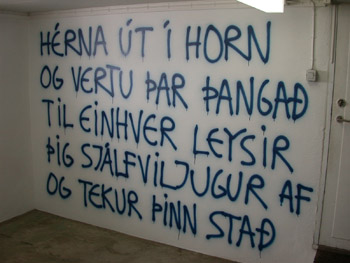
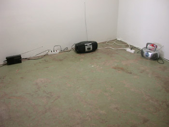
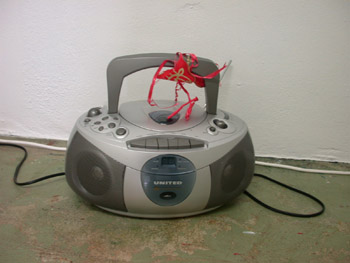
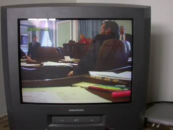
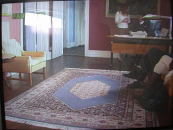
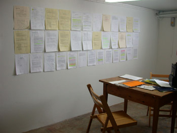
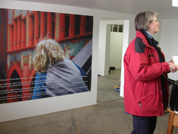

|
|
|
AFTUR - WIEDER - AGAIN
18.02. - 05.03.2006
OPNUN LAUGARDAGINN 18.02.2006 KLUKKAN 16
OPIÐ LAUGARDAGA OG SUNNUDAGA KLUKKAN 14-17 OG SAMKVÆMT SAMKOMULAGI
GALLERÍ + 10 ÁRA 1996-2006
JORIS RADEMAKER / GUÐRÚN PÁLÍNA GUÐMUNDSDÓTTIR
GALLERÍ +
BREKKUGÖTU 35
IS - 600 AKUREYRI
GALLERIPLUS@INTERNET.IS
+354 462 7818
|
Hlynur Hallsson opnar sýninguna AFTUR - WIEDER - AGAIN í Gallerí + á Akureyri laugardaginn 18. febrúar klukkan 16. Þetta er tíu ára afmælissýning gallerísins sem þá Joris Rademaker og Guðrún Pálína Guðmundsdóttir hafa rekið frá febrúar 1996. Hlynur setti einmitt upp opnunarsýninguna og er nú mættur aftur til að halda uppá afmælið.
Hlynur Hallsson var bæjarlistamaður Akureyrar 2005 og þetta er þriðja sýningin af fjórum sem hann setur upp í bænum sem þakklætisvott fyrir útnefninguna. Sú fjórða og síðasta verður í Jónas Viðar Gallerí í Listagilinu og opnar hún föstudaginn 3. mars 2006 og heitir sú sýning "Myndir - Bilder - Pictures". Hlynur hlaut tveggja ára listamannalaun á þessu ári.
|
Make words not war!
Raimar Stange on the Textual Works of Hlynur Hallsson
Back in the second half of the 1990s, Hlynur Hallsson would send me post cards from various parts of the world, cards on which he had written sentences in Icelandic – knowing full well that I had no knowledge of that language. In those days incomprehensibility and its aesthetic quality were an integral part of the cultural master plan, very much in the spirit of Johann Heinrich Pestallozi, the Swiss educational reformer who as early as the 18th century had suggested that children be confronted with a language that was foreign to them so that they would recognize that the world cannot be made completely comprehensible.However, the political situation has deteriorated rapidly since then -- brutal neoliberalism and relentless globalization scarcely leave a place for penetrating and perceptive reflections on contemporary aesthetics and an (un-ideological) knowledge of the world. The German author Hermann Hesse expressed views in a like vein when he wrote, “Drowning men sing no arias.” Hlynur Hallsson is also not singing any arias in this new millennium. Although his more recent textual works are often still multilingual – usually English, Icelandic and German – this multilingualism is now less of an isolated occurrence than the expression of a (his) way of life in a globalized internationality.
|
However, and above all, Hlynur Hallsson’s textual works -- which in their form remind us of anonymous graffiti, and that not by sheer coincidence, -- are sometimes of an explicit, yes, aggressive content. For example, during the 2005 Biennale di Venezia the young Icelandic artist wrote in black letters on the walls of various buildings the words:
“Bush + Blair
Terror + Fear”
And at an exhibition in Charlottenborg in 2004 he emblazoned the words “War is terrorism with a bigger budget. Fight terrorism with all power” on the walls of the gallery, thereby mutating it into a political arena.In place of vexing ambiguities and incomprehensibilities, Hlynur Hallsson’s work presents a written challenge to post-capitalist imperialism like the (Iraq) war – which, as Antonio Negri and Michael Hardt pointed out in their anti-globalization primer “Empire,” has allegedly become a mere police action no longer requiring UN approval. And that is fine, for even if these days neoformalistic art and introspection- doting painting have in many places permitted this to be forgotten, enthralling art is -- not at the least –inscribed in moral conscience.
(Translated from German by Lois Feuerle, Portland, Oregon)
|
Make words not war!
Raimar Stange über die Textarbeiten von Hlynur Hallsson
Einst, in der zweiten Hälfte der 1990er Jahre, hat mir Hlynur Hallsson Postkarten von verschiedenen Orten dieser Welt geschickt, auf denen er isländische Sätze geschrieben hatte – wohl wissend, dass ich dieser Sprache überhaupt nicht mächtig bin. Unverständlickeit und ihre ästhetische Qualität stand damals auf dem ästhetischen Masterplan, ganz im Sinne von Johann Heinrich Pestallozi, dem schweizerischen Bildungsreformer, der im 18. Jahrhundert bereits vorschlug, Kinder mit einer für sie fremden Sprache zu konfrontieren, damit sie erkennen, dass die Welt nicht gänzlich für sie verständlich sein kann. Doch: Die politische Situation hat sich seit damals rapide verschärft, ein brutaler Neoliberalismus und die gnadenlose Globalisierung lassen kaum noch einen Platz mehr für feinsinnige Reflexionen über zeitgenössische Ästhetik und (unideologische) Welterkenntnis. In diesem Sinne schrieb schon der deutsche Literat Hermann Hesse: „Ertrinkene singen keine Arien“. Auch Hlynur Hallsson singt im neuen Jahrtausend längst keine „Arien“ mehr, seine neueren Textarbeiten sind zwar oftmals immer noch mehrsprachig, meist in englischer, isländischer und deutscher Sprache, aber diese Mehrsprachigkeit ist weniger erratisch, als jetzt der Ausdruck von (s)einer Lebensweise in einer globalisierten Internationalität.
|
Außerdem und vor allem: Hlynur Hallssons Textarbeiten, die formal nicht zufällig an anonyme Graffitis erinnern, sind jetzt mitunter explizit politischen, ja aggressiven Inhalts:
„Bush + Blair
Terror + Fear“
z. B. hat der junge Isländer während der la Biennale di Venezia anno 2005 in Venedig in schwarzer Schrift an diverse Häuserwände geschrieben. Und in einer Ausstellung in Charlottenborg 2004 stand klar und deutlich an einer Wand des konsequent zum politischen Zentrums mutierenden Kunstraumes zu lesen: „War is terrorism with a bigger budgetFight terrorism with all power“.Schriftliche Kampfansagen gegen einen postkapitalistischen Imperialismus, dem der (Irak)Krieg, schon Antonio Negri/Michael Hardt weisen in ihrer Antiglobalisierungsfibel „Empire“ daraufhin, vermeintlich zu bloßen Polizeieinsätzen werden, der die UN dann angeblich nicht mehr zuzustimmen braucht, treten so in Hlynur Hallssons Arbeit an die Stelle irritierender Mehr- und Nichtdeutigkeiten. Gut so, denn spannender Kunst ist , auch wenn neoformalistische Kunst und innerlichkeitsverliebte Malerei dies derzeit mancherorts beinahe vergessen lassen, nicht zuletzt ein moralisches Gewissen eingeschrieben!
|
 |
 |
 |
 |
 |
 |
 |
 |